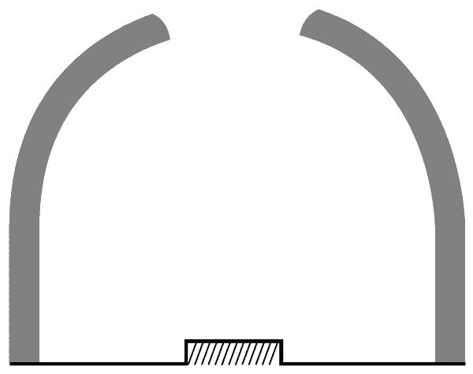

Кухня Древней Месопотамии.

Древняя Месопотамия в наше время не так известна, как Древний Египет, а ведь эта великая цивилизация существовала на Ближнем Востоке в долине рек Тигр и Евфрат 3 тысячи лет – c середины четвертого тысячелетия до нашей эры по 539 год до нашей эры, когда под натиском персов пал Вавилон. Под натиском персов – это очень важная деталь! Месопотамия на двести лет вошла в состав Персидской империи, и этого срока хватило для того, чтобы передать завоевателям часть своих культурных традиций, в том числе и кулинарных.
Современная иракская кухня, современная иранская кухня и современная ливанская кухня – это три «дочери» кухни Древней Месопотамии. Иракская кухня – старшая дочь, сохранившая в себе наибольшее количество материнских традиций. Персидская кухня – средняя дочь, вдумчивая, работящая, не любящая легких решений. Ливанская кухня – дочь младшая, немного ветреная и легкомысленная, не склонная уделять приготовлению блюд столько времени, сколько уделяют старшие сестры, но при этом тоже чтущая материнские заветы.
Давайте перенесемся на пять тысяч лет назад в долину Тигра и Евфрата и внимательно посмотрим по сторонам. Мы увидим возделанные поля, сады и огороды, то есть – типичный земледельческий пейзаж. Благословенный край, в котором и климат, и почва, и наличие воды способствуют земледелию, – вот что такое Месопотамия. Вы читаете уже шестую главу, так что должны разбираться в причинах происхождения блюд и формирования рационов.
Что, по-вашему, должно царствовать на столах жителей Месопотамии?
Разумеется – хлеб, который пекли в глиняной печи.
Традиционная месопотамская глиняная печь сохранилась у многих (преимущественно азиатских) народов до наших дней. В Индии ее называют тандуром, в Турции – тёндиром, а в Испании и Латинской Америке – чименеей. И пусть вас не удивляет Испания. Давайте вспомним, что в VIII веке Пиринейский полуостров был завоеван арабами, у которых эта печь называется тандыром.
Отличительным признаком тандура (давайте остановимся на индийском варианте названия) является сочетание низкого расхода топлива с большой теплоемкостью. С топливом в Древней Месопотамии дело обстояло примерно так же, как и в Древнем Китае, – его было мало. Немного спасало положение хорошо развитое животноводство. Навоз – это же не только хорошее удобрение, но и неплохое топливо в высушенном виде. Но все равно топливо приходилось расходовать экономно.
Вот вам пример двух способов решения одной и той же задачи – недостатка топлива. Китайцы пошли по пути быстрого приготовления пищи, а жители Месопотамии изобрели очень выгодную печь, расходующую мало топлива. Разные способы решения задачи определили разные пути развития региональных кухонь.
Бутылка без горлышка – вот макет тандура. Для того чтобы сберегать тепло, эта печь сужается кверху. Лишние отверстия, через которые уходит тепло, не нужны. Закладка топлива и приготовляемой еды производится через единственное верхнее (или боковое) отверстие. Изнутри тандур выкладывается глиняными кирпичами, которые хорошо сохраняют тепло. Тандур можно врыть в землю, как это принято в Армении, тогда тепло будет сохраняться еще дольше.

Тандур в разрезе
На первый взгляд может показаться, что пользоваться тандуром неудобно. Да, разумеется, современная электрическая плита удобнее, но и тандур довольно прост в эксплуатации. Заложили на дно топливо, дождались, пока печь прогреется, положили в нее продукты. Хлебные лепешки лепятся прямо на стенки тандура (можно предварительно протереть их от гари, образовавшейся при сгорании топлива), для варки подвешивается котел, а жарить можно на решетке или на вертеле. Если тандур установлен в жилище, то он может служить и для обогрева.
У вас есть печь, которая долго сохраняет тепло. Утром вы испекли в ней хлеб и пожарили мясо. Но печь еще горячая, и жаль, если это тепло пропадет попусту. Почему бы перед уходом в поле или, к примеру, в кузницу не поставить в печь горшок с залитой водой дробленой пшеницей? К моменту возвращения домой вас будет ждать теплая каша. Доставай – и ешь! А завтра можно будет уложить в горшок мясо и овощи, ведь однообразная еда надоедает. А послезавтра можно собрать то, что уже начинает портиться, нарезать, уложить в горшок и вечером оценить, вышло ли из вашей экономии что-то путное… Короче говоря – было бы тепло, а применение ему всегда найдется.
Нельзя сказать, какой кулинарный путь перспективнее и продуктивнее – путь быстрой готовки или путь длительной готовки. У каждого есть преимущества и недостатки. Быстрая готовка, особенно в сочетании с широчайшим ассортиментом продуктов (китайская всеядность), делает рацион невероятно разнообразным и способствует кулинарным экспериментам. Зато длительная готовка позволяет открывать новые вкусы, а также позволяет добиваться более полного слияния вкусов различных ингредиентов в единый вкус блюда. В общем, и так хорошо, и этак. А лучше всего то, что у нас с вами есть столь богатое кулинарное разнообразие.
Тандур не располагает к выпеканию толстых хлебов, которые будут сваливаться со стенок вниз, на угли. Поэтому в Древней Месопотамии и в кухнях всех народов, использующих тандур, господствуют лепешки. Лепешка может быть тонкой или толстой, но все равно это будет лепешка, а не буханка и не багет. От простой лепешки рукой подать до полой внутри питы и до лепешек с разнообразными начинками. Лепешки с начинками – это не только удобное, но и весьма экономное решение проблемы насыщения. Начинки в плоские лепешки помещается немного, но начинка делает лепешку полноценной трапезой, ведь это уже не просто хлеб, а хлеб с чем-то.
Из зерновых в Древней Месопотамии выращивали пшеницу, полбу и ячмень.
«И рис!» – добавят сейчас читатели, знакомые с ближневосточными кухнями, в которых этот злак получил широчайшее распространение. Но рис появился в Месопотамии не раньше VIII века. Его завезли туда с Востока арабские купцы. До тех пор главным злаком жителей Месопотамии оставалась пшеница. Помимо хлеба из зерен пшеницы и ячменя варились каши с различными добавками. Также дробленые зерна добавлялась в супы и салаты.
Быстрый китайский способ готовки располагает к тому, чтобы смешать в воке все, что есть под рукой, и поджарить в масле, а тандур ради одного блюда разжигать нецелесообразно. Но почему бы не смешать оставшуюся со вчерашнего дня вареную пшеницу со свежими овощами? А если еще добавить к этой смеси пряную зелень, да полить ее растительным маслом, то получится не только вкусное, но и сытное (пшеница, масло) блюдо, которое сохранилось до наших дней. Такой салат (это же все-таки салат, а не каша) называется табуле. Запомните и при случае непременно попробуйте. Вроде бы ингредиенты простейшие и вкус должен быть простым и предсказуемым, но на самом деле вас ожидает маленькое гастрономическое потрясение.
Земледелие дает человеку больше пищи, чем скотоводство. Зерно, фрукты и овощи преобладают в рационе земледельцев. В сравнении с дарами земли мясо стоит дорого, и далеко не каждый житель Древней Месопотамии мог позволить себе ежедневно есть мясо (или птицу, или рыбу). А если мясо и попадало на стол, то есть его без каких-либо добавок было расточительством. К мясу полагался гарнир или же мясо входило в состав блюд наряду с зерновыми и овощами. Так выходило рачительнее.
На втором месте после зерновых культур в рационе жителей Древней Месопотамии находились финики. Принято считать, что именно здесь, в долине Тигра и Евфрата, около 6 тысяч лет назад произошло окультуривание диких видов финиковой пальмы. Эти растения отличаются неприхотливостью, сочетающейся с высокой урожайностью. На десятом году своей жизни финиковая пальма начинает плодоносить в полную силу и в течение примерно 70 лет дает не менее 10 стоунов[53] плодов ежегодно. И каких плодов! Высококалорийных, вкусных, богатых калием. Финики можно есть свежими, а можно засушить впрок. Финики вообще хорошо хранятся. Финики могут входить в состав различных сладких десертов или фруктовых салатов. В растертом виде их можно добавлять в тесто. Хлеб с финиками был лакомством, чем-то вроде печенья. Кроме этого, из фиников делают муку, перемалывая их вместе с косточками. В пищу также употребляются почки и цветки финиковой пальмы и мягкая сердцевина молодых побегов. Если эту сердцевину высушить, то и из нее тоже можно делать муку. А сладкий древесный сок финиковой пальмы пили, разбавив его водой, или же использовали для подслащивания блюд и производства алкогольсодержащих напитков – добавляли в пивное сусло, как в Древнем Египте, или сбраживали отдельно.
Финиковые пальмы росли в Древней Месопотамии повсюду, поэтому финики стоили дешево, примерно столько же, сколько и ячмень с пшеницей. Для сравнения – инжир стоил вчетверо дороже пшеницы. Многочисленные изображения финиковой пальмы, найденные археологами на территории Месопотамии, подтверждают значимость этого растения для древних жителей региона.
Вы думаете, что больше ничего полезного финиковая пальма дать не могла? Ошибаетесь – финиковые косточки использовались в качестве топлива. Часто их смешивали с навозом и формировали из этой смеси лепешки или брикеты, которые затем высушивали. Брикеты удобнее хранить и закладывать в тандур, нежели россыпь косточек.
Античный историк Страбон писал, что финиковая пальма по значимости занимает в Месопотамии второе место после ячменя, потому что она дает хлеб, вино, уксус, мед и муку, а также топливо (косточки) и материал для изготовления плетеных изделий. Страбон упоминает некую персидскую песню, в которой якобы перечислено 360 способов использования финиковой пальмы. З60 – это, конечно же, преувеличение, но оно тоже ценно, поскольку помогает понять роль финиковой пальмы в жизни древних людей.
Самым распространенным напитком в Древней Месопотамии было пиво. Его изготавливали из зерна и солода, без использования хмеля, точно так же, как и в Древнем Египте. Из дошедших до нас ведомостей видно, что для производства пива выделялась значительная часть урожая зерновых – одна треть, а зачастую и больше. Пивной ассортимент в Месопотамии был впечатляющим – полтора десятка сортов пива, среди которых главенствовало черное пиво, приготовляемое из смеси полбы и ячменя. На одной из найденных археологами глиняных табличек говорится о том, что хлебные лепешки и черное пиво помогли пережить тяжелые времена. То есть при отсутствии прочих продуктов можно было питаться хлебом, запивая его черным пивом. К месту можно вспомнить старинную английскую поговорку о том, что каждый, у которого есть эль и кусок пирога, – король.
Древние люди, жившие в жарком климате, не знали, что с потом из организма выводятся натрий, калий и ряд других химических элементов. Но они опытным путем установили, что соленая еда хороша в жару (поваренная соль – это хлорид натрия) и пиво тоже хорошо – оно не только утоляет жажду, но и придает сил. Иначе и быть не может, ведь пиво «наследует» от зерна различные содержащиеся в нем вещества, в том числе и калий. О важной роли пива в жизни жителей Древней Месопотамии свидетельствует то, что все жрецы ежедневно получали от правителей определенное количество черного пива, примерно соответствовавшего суточной потребности в нем. Видимо, население жертвовало жрецам только еду, а делиться пивом не было расположено, вот и приходилось правителям брать эту «повинность» на себя.
А вот вино в Древней Месопотамии большой популярностью не пользовалось. Странно, не так ли? Вино – вкусный напиток. Если хотите знать мнение автора, то, на его взгляд, вкус вина лучше, богаче и насыщеннее, чем вкус примитивного бесхмелевого пива. Почему же вино находилось где-то «на задворках»?
Дело в том, что в Древней Месопотамии виноделие не получило большого развития и не смогло раскрыться во всей своей красе. Дело в том, что там изготовляли и пили несозревшее вино, такое, которое в наше время называется «новым»[54]. Оно слаще обычного, зрелого вина, поскольку в нем еще не весь сахар переработан в спирт, и по вкусу оно ближе к исходному сырью, чем зрелое вино. Вкус простой, ненасыщенный, небогатый. Для того чтобы понять вкусовую разницу между незрелым и зрелым вином, можно сначала выпить немного виноградного сока, а затем – немного зрелого вина и сравнить ощущения. Да – виноградного сока, поскольку незрелое вино представляет собой виноградный сок, находящийся в процессе брожения.
Жители Месопотамии выпивали все вино незрелым. Они не выдерживали закончившее бродить вино в деревянных бочках. Отсюда и представление о вине как о не очень-то вкусном напитке. Вдобавок пиво можно было готовить и пить круглый год, а незрелое вино пили в течение недели после каждого сбора урожая.
Условно вином также можно назвать перебродивший сок финиковой пальмы, но этот напиток в Древней Месопотамии считался невкусным, и пили его только бедняки.
Вам может показаться странным, что ни в Древнем Египте, ни в Древнем Китае, ни в Древней Месопотамии люди не знали соков. В наше время, когда в каждом магазине есть стеллажи с соками, невозможно поверить в то, что наши предки обходились без столь полезных и легких в приготовлении напитков. Но давайте взглянем на проблему соков с другой стороны и спросим: а зачем нашим предкам были нужны соки? Утолить жажду можно водой или пивом, а плод можно просто съесть. Да и хранятся свежевыжатые соки в жарком климате без холодильника считаные часы. Как их транспортировать? Как их продавать? И не надо забывать о том, что жизнь наших древних предков, если, конечно, они не принадлежали к привилегированным сословиям, проходила в неустанных трудах. Даже в наше время, когда труд фермера механизирован на 99 %, фермеры начинают работать в пять-шесть часов утра, а заканчивают поздно вечером. Что же говорить о древних временах? Было ли у кого-то из жителей Древней Месопотамии время, силы и желание давить из плодов сок? Навряд ли. Можно допустить, что отдельным богачам слуги готовили соки, но широкого распространения это явление получить не могло. И не получило.
Бобы, огурцы, редька, салат, репа, лук, чеснок, тыквы, арбузы, дыни, яблоки и груши также были распространены в Древней Месопотамии. Хотите приготовить месопотамское блюдо? Приготовьте зеленую чечевицу с говядиной, бараниной, курицей или уткой. Но только не со свининой, поскольку свиноводство не было распространено в тех благословенных краях.
Для приготовления чечевицы с мясом по-месопотамски вам понадобятся мясо, чечевица, лук, растительное масло (желательно кунжутное) и соль. Пропорции можете рассчитать самостоятельно, по своему вкусу, но помните, что мяса в Древней Месопотамии ели не очень-то много, потому что оно было дорогим. Быков разводили для работы. «Мясных» быков, изначально предназначавшихся на убой, в Месопотамии практически не было. Быки и коровы забивались в «пожилом» возрасте, когда не могли работать или давать молоко. Наличие тандура позволяло готовить жесткое мясо старых животных в течение длительного времени для того, чтобы оно стало мягким. Овец и коз жители Месопотамии держали в основном для получения молока и шерсти. На убой (а также ради яиц) разводили домашнюю птицу – уток, кур, гусей и голубей. Хорошо выручала рыба, которой в реках и каналах было много.
Но если вам хочется взять два фунта говядины на горсть чечевицы, то так уж тому и быть. Поступайте по зову души и считайте, что вы готовите обед для царя Хаммурапи, правившего Вавилоном в XVIII веке до нашей эры.
Скорее всего у вас дома нет тандура, но зато есть мультиварка, в которой продукты могут томиться не хуже, чем в месопотамской печи.
Налейте на дно посуды для готовки немного воды… Воды, а не кунжутного масла! Кунжутное масло стоило дорого, и жарить на нем не было принято. Даже на царской кухне. Маслом, точнее – парой капелек масла, вы сдобрите готовое блюдо. Аромат кунжута добавит заключительную нотку к симфонии вкуса этой древней еды.
Мелко нарежьте мясо и лук, положите в воду и тушите под крышкой на среднем огне в течение четверти часа. Затем положите зеленую чечевицу, которую предварительно нужно замочить в холодной воде на 6 часов. Перемешайте. Добавьте воды так, чтобы она на палец покрывала чечевицу с мясом, и готовьте под крышкой на слабом огне около полутора часов. Все должно как следует развариться. Степень готовности al dente придумали много позже и вдали от Древней Месопотамии. Когда все будет готово, посолите по вкусу и добавьте немного кунжутного масла. Соли можете не жалеть, она в Древней Месопотамии стоила дешево.
Жители Месопотамии любили молоко и молочные продукты, в первую очередь – простоквашу. Здесь зародилось сыроделие, правда, делались только мягкие, невыдержанные сыры. Но все равно это была революция – появился новый вид молочного продукта! Разумеется, сыром сразу же стали начинять лепешки. В Грузии есть национально блюдо под названием «хачапури», представляющее собой закрытую или открытую лепешку с начинкой из сыра. Хачапури – визитная карточка грузинской кухни, точно такая же, как и грузинское вино. Но если задуматься о корнях и истоках, то самый первый хачапури на нашей планете испекли в долине Тигра и Евфрата. А еще там создали первые конфеты из орехов и семян, покрытых медом или сахаром. То, что мы сегодня называем французским словом «драже», происходит из Древней Месопотамии, в которой сладкие блюда получили широкое распространение. В жизни древних людей было не так уж много удовольствий. Достаточно сказать, что у них не было ни телевидения, ни радио, ни интернета. Да и сама жизнь на плодородных месопотамских землях была довольно суровой. Ежегодно по весне Евфрат и Тигр катастрофически разливались, затапливая не только поля, но и часть поселений. Летом здесь было очень жарко, а зимой холодно и дождливо. Совсем не рай, нисколько. И все, точнее – почти все, приходилось делать вручную. Ну как при такой жизни не побаловать себя чем-то сладеньким? Решительно невозможно!
Если говорить о визитных карточках, то визитной карточкой кухни Древней Месопотамии были разнообразнейшие сладкие пироги. Для начинки использовалось все, что только можно было поместить в тесто, – инжир, финики, орехи, яблоки, сушеные сливы. Для большей сладости в начинку добавлялся мед или тростниковый сахар. Различные пряности (анис, кориандр, шафран и др.) оттеняли вкус пирога. Кстати, мед мог добавляться и в мясную начинку. Ничего удивительного в этом нет. Сочетание мяса и меда встречается в кухнях разных народов, потому что это весьма гармоничное сочетание. Вот вам аутентичный рецепт древней месопотамской начинки для пирога – мясо птицы (утки или курицы, но можно взять и гуся), лук, мед и щепотка растертых семян аниса, которые часто и неправильно называют плодами. Какое тесто делать для пирога? Любое по вашему выбору. В Древней Месопотамии знали и пресное, и кислое тесто.
Еще одной месопотамской революцией стало искусственное разведение рыбы в прудах. Дешевая рыба служила вполне адекватной заменой дорогому мясу и не очень дешевой птице. Если мясные блюда для большинства населения были праздничной едой, то рыбу даже бедняки могли позволить себе ежедневно. Из рыбы варили супы с добавлением зерна и овощей, рыбу жарили или тушили с овощами. А вот пироги рыбой не начиняли, и нетрудно догадаться почему – из-за обилия мелких костей, которых особенно много в речной рыбе, разводимой в прудах. Другое дело – жарка. Если сделать на рыбе несколько надрезов и готовить при высоких температурах, то кости станут практически незаметными.
Наши предки просто-напросто готовили себе еду из тех продуктов, которые у них были. Они не задумывались о том, что создают Великую Месопотамскую (или какую-то еще) кухню. И уж тем более не задумывались они о том, какое историческое значение будет иметь их кухня. Им и без этого было о чем думать. Но нам с вами приходится рассматривать факты не сами по себе, а в связи друг с другом. Приходится искать преемственность и пытаться понять, как одно повлияло на другое. Кухня Древней Месопотамии дала начало не только разным кухням Ближнего Востока, но и современным европейским кухням. Общие принципы приготовления блюд, единый взгляд на сочетаемость продуктов, схожие виды блюд, непременное присутствие хлеба в рационе. Все это могли бы сделать и древние египтяне, но у них не было такого замечательного и располагающего к готовке изобретения, как тандур.
Назовите две вещи, которые создали все современное кулинарное разнообразие. Долго думать не надо – это тандур и вок. Быстрое приготовление против длительного приготовления. Да, конечно, у китайцев тоже есть блюда, приготовление которых отнимает много времени. Классический пример – утка по-пекински, которая готовится около двух суток. Но надо принимать во внимание, что пекинская утка – «искусственное» блюдо. Рецепт ее приготовления появился не в результате кулинарной эволюции, а был создан придворным врачом Ху Сыхуэем в XIV веке на основе рецепта обычной утки, готовившейся на открытом огне. Ху, занимавшийся организацией питания императора, написал трактат под названием «Важнейшие принципы питания», в котором помимо прочих блюд была упомянута и эта утка. Ху написал, что это блюдо с глубокой древности было известно в провинции Шаньдун, расположенной на востоке Китая, однако там не сохранилось никаких упоминаний о нем. Скорее всего утка по-пекински была придумана Ху Сыхуэем. Это блюдо идеально подходит для императорской кухни, в которой нет нехватки рук, но есть нехватка работы для этих рук. О том, насколько утка по-пекински отличается от прочих китайских блюд, можно судить по вопросу: «Может, ты хочешь утку по-пекински?», который служит в Китае намеком на завышенные притязания собеседника.
Кухонная утварь в Древней Месопотамии была примитивной – котлы для готовки, горшки и кувшины для хранения продуктов и напитков, чаши для еды. Ели в основном руками, супы поедали на китайский манер – сначала выпивали жидкость, а затем выбирали то, что останется. В качестве столового прибора мог выступать кусок лепешки (эта традиция сохранилась у многих народов до наших дней). При раскопках в Месопотамии время от времени находили ложки, но их количество говорит о том, что большого распространения эти столовые приборы не получили.
Кстати говоря, жидкий суп можно съесть без ложки и другим способом. Можно накрошить в него хлеба, который впитает всю жидкость, и съесть то, что получилось, при помощи рук. Такое можно увидеть у многих народов от Марокко до Индии.
Кухня Древней Месопотамии стала фундаментом для европейской и ближневосточной кухни. Кухня Древнего Китая – для Восточной и Юго-Восточной Азии.
Но между Месопотамией и Китаем находится Индия, кухня которой стоит особняком… Нет, не так. Между Месопотамией и Китаем находится Индия, кухни которой не существует.